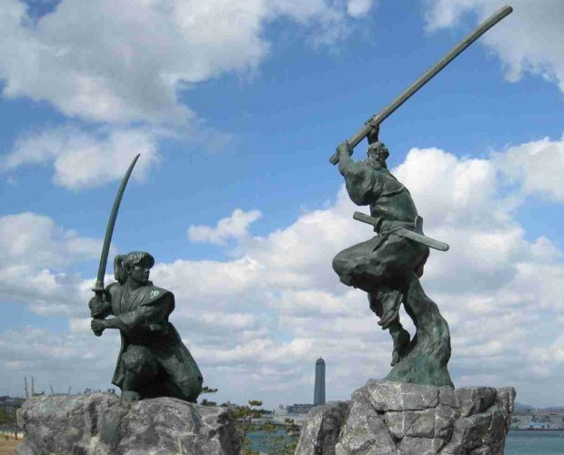

Duelos
Apesar de ser uma lei antiga, de 1889, desafiar alguém para um duelo ou duelar pode resultar em prisão, inclusive para quem apenas testemunhou o duelo. Aos duelistas, pena de 6 meses a 5 anos de prisão.Miyamoto Musashi e Sasaki Kojiro estariam presos se fosse nos dias de hoje. E por incrível que pareça, hoje em dia ainda tem gente que é presa por duelo
Insultar aqueles que rejeitaram seu duelo
Esta lei emprega a palavra kettō (duelo), que remonta a época em que lutadores de espadas desafiavam uns aos outros nas noite de lua cheia. No entanto, esta lei centenária pode se aplicar hoje a qualquer desafio criado com antecedência onde as vidas dos concorrentes estão em perigo. Em termos práticos: Se alguém te insultar pelo fato de você ter se recusado a participar de uma sessão roleta russa, poderá ser processado por isso.